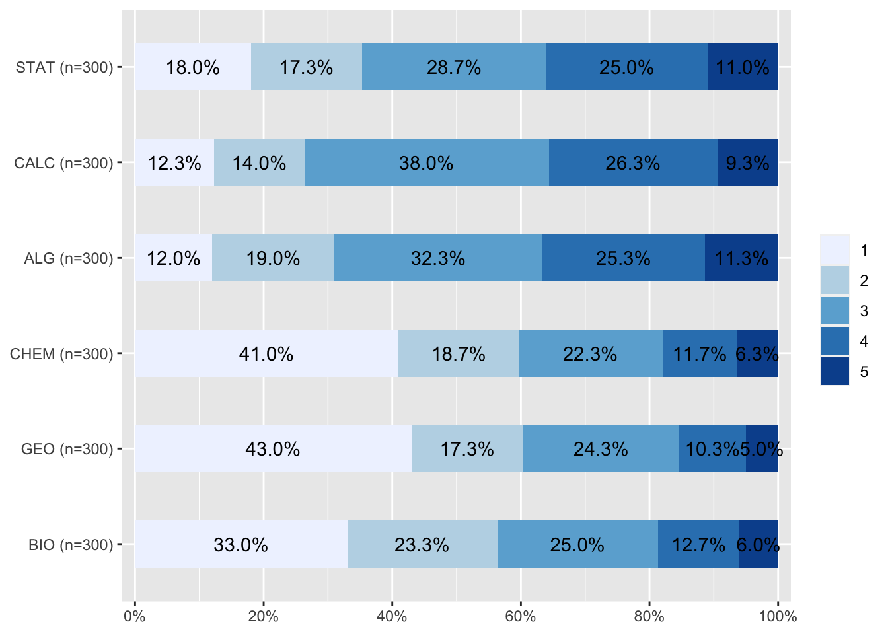
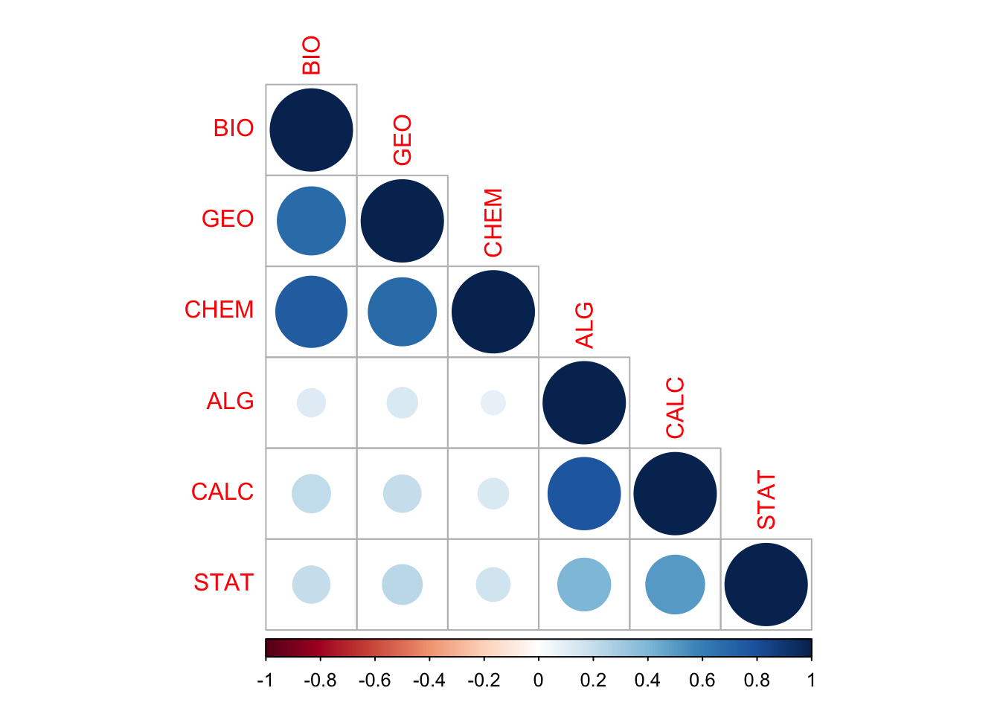
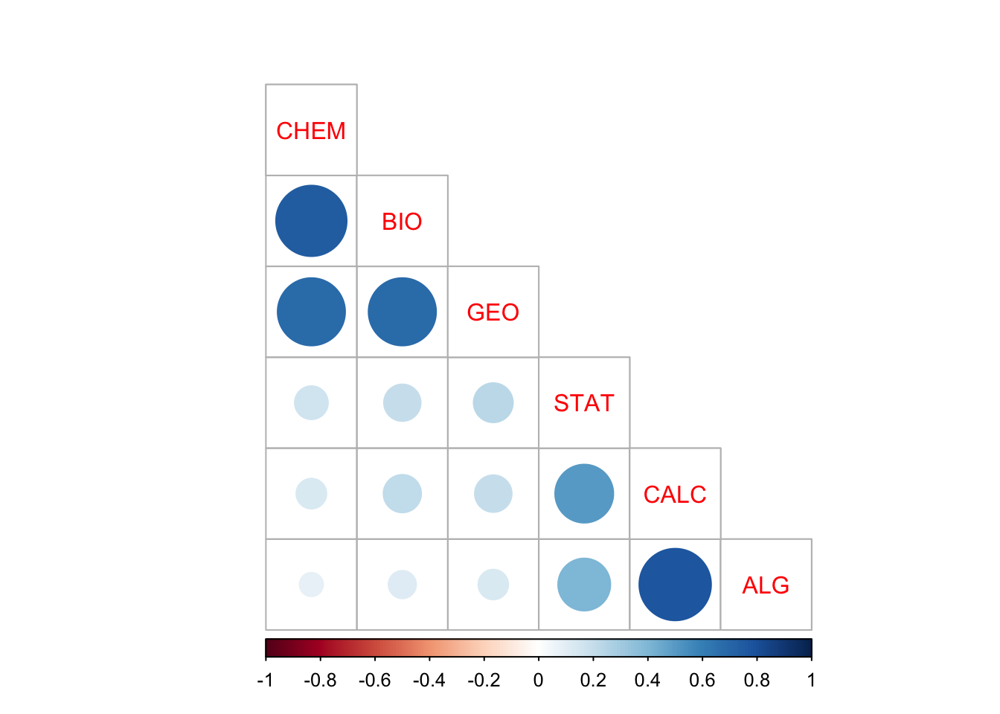
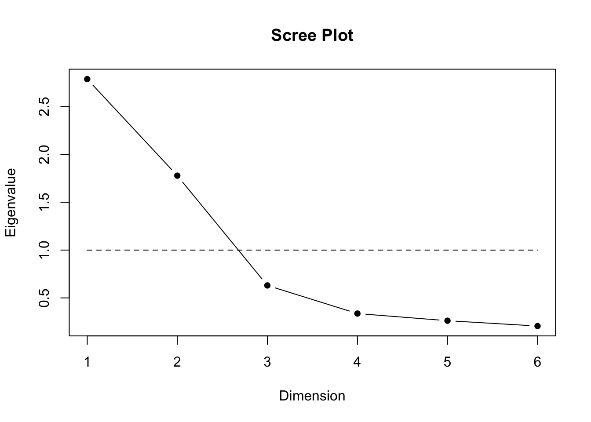
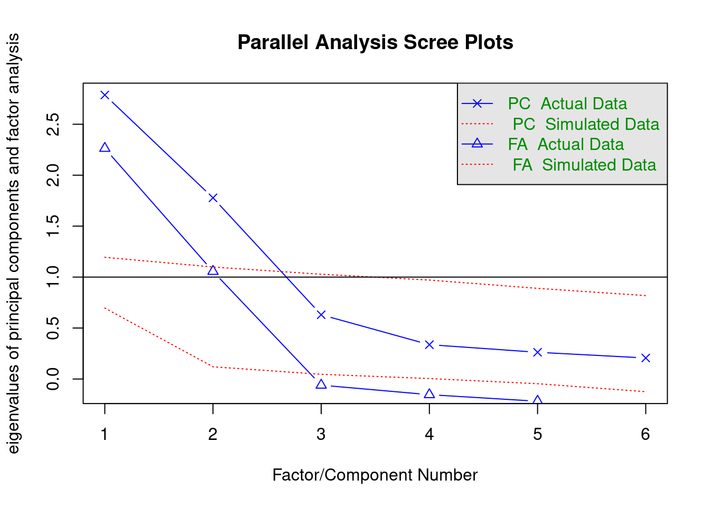
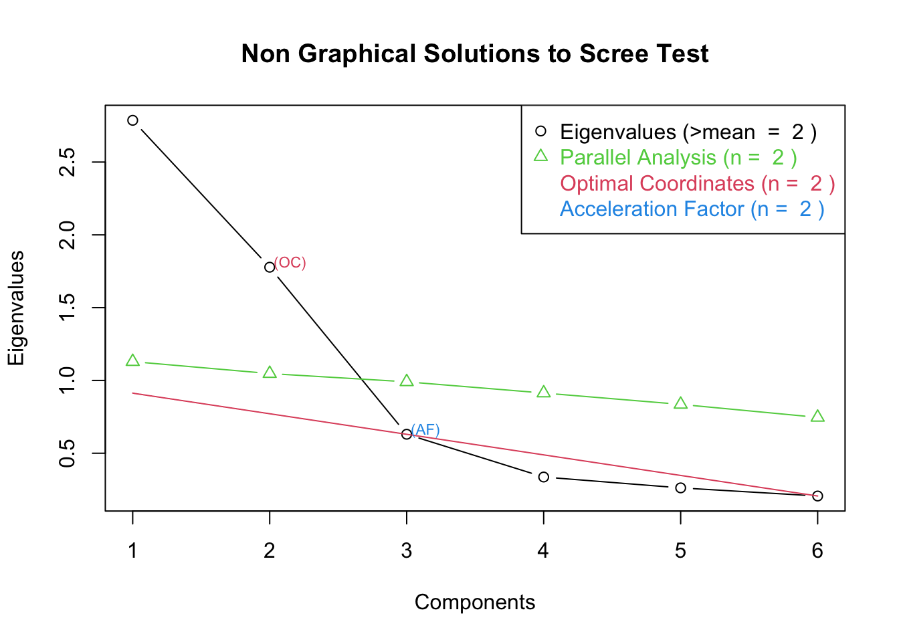

pacman::p_load(stargazer, # ReportesjPlot, sjmisc, # reporte y gráficossjlabelled,corrplot, # grafico correlacionesxtable, # ReporteHmisc, # varias funcionespsych, # fa y principal factorspsy, # scree plot functionnFactors, # parallelGPArotation) # rotación
Installing package into '/Users/macbookair/Downloads/encuestas-sociales-main/renv/library/R-4.2/aarch64-apple-darwin20'
(as 'lib' is unspecified)
also installing the dependency 'htmlTable'
Hmisc installed
Installing package into '/Users/macbookair/Downloads/encuestas-sociales-main/renv/library/R-4.2/aarch64-apple-darwin20'
(as 'lib' is unspecified)
psy installed
Installing package into '/Users/macbookair/Downloads/encuestas-sociales-main/renv/library/R-4.2/aarch64-apple-darwin20'
(as 'lib' is unspecified)
nFactors installed
Installing package into '/Users/macbookair/Downloads/encuestas-sociales-main/renv/library/R-4.2/aarch64-apple-darwin20'
(as 'lib' is unspecified)
GPArotation installed
Datos
Lectura de datos
data <-read.csv("input/data/efa_asignaturas.csv")
Muestra de 300 alumnos a los que se le pregunta por su asignatura favorita en una escala de 1 (no me agrada) a 5 (me agrada)
Exploración de datos
summary(data)
BIO GEO CHEM ALG CALC
Min. :1.000 Min. :1.00 Min. :1.000 Min. :1.00 Min. :1.000
1st Qu.:1.000 1st Qu.:1.00 1st Qu.:1.000 1st Qu.:2.00 1st Qu.:2.000
Median :2.000 Median :2.00 Median :2.000 Median :3.00 Median :3.000
Mean :2.353 Mean :2.17 Mean :2.237 Mean :3.05 Mean :3.063
3rd Qu.:3.000 3rd Qu.:3.00 3rd Qu.:3.000 3rd Qu.:4.00 3rd Qu.:4.000
Max. :5.000 Max. :5.00 Max. :5.000 Max. :5.00 Max. :5.000
STAT
Min. :1.000
1st Qu.:2.000
Median :3.000
Mean :2.937
3rd Qu.:4.000
Max. :5.000
names(data)
[1] "BIO" "GEO" "CHEM" "ALG" "CALC" "STAT"
dim(data) # filas columnas
[1] 300 6
nrow(na.omit(data)) # número de casos con datos completos
[1] 300
Descriptivos
stargazer(data, type ="text") # para visualizar en consola
====================================
Statistic N Mean St. Dev. Min Max
------------------------------------
BIO 300 2.353 1.228 1 5
GEO 300 2.170 1.230 1 5
CHEM 300 2.237 1.273 1 5
ALG 300 3.050 1.174 1 5
CALC 300 3.063 1.127 1 5
STAT 300 2.937 1.259 1 5
------------------------------------
stargazer(data, type ="html") # a html
Statistic
N
Mean
St. Dev.
Min
Max
BIO
300
2.353
1.228
1
5
GEO
300
2.170
1.230
1
5
CHEM
300
2.237
1.273
1
5
ALG
300
3.050
1.174
1
5
CALC
300
3.063
1.127
1
5
STAT
300
2.937
1.259
1
5
Gráfico barras apiladas
#sjplot(data$BIO, "frq") # no muy buena descripción ...names(data)
[1] "BIO" "GEO" "CHEM" "ALG" "CALC" "STAT"
plot_stackfrq(data)

Gráfico final
#label valuesdata <- data %>%set_labels (., labels=c("No le agrada"=1,"Le agrada"=5))plot_stackfrq(data, sort.frq ="last.desc", geom.colors ="OrRd") #+ theme(legend.position="bottom")
Computed correlation used pearson-method with listwise-deletion.
Reporte gráfico con corrplot
M=cor(data) # matriz simple de correlaciones de los datoscorrplot(M, type="lower") # lower x bajo diagonal

Otra opción
corrplot(M, type="lower",order="AOE", cl.pos="b", tl.pos="d") #agrega nombres en diag.

Análisis factorial
¿Qué se puede deducir de la matriz de correlaciones en relación a la estructura subyacente en términos de variables latentes? Vemos dos grupos de indicadores asociados entre sí, y no asociados con el otro grupo. Por un lado, el grupo de chem, bio y geo, y por otro el de stat, calc y alg.
Adecuación de matriz para análisis factorial
KMO(corMat)
Kaiser-Meyer-Olkin factor adequacy
Call: KMO(r = corMat)
Overall MSA = 0.7
MSA for each item =
BIO GEO CHEM ALG CALC STAT
0.73 0.81 0.72 0.60 0.60 0.84
cortest.bartlett(corMat, n =300)
$chisq
[1] 849
$p.value
[1] 2.6e-171
$df
[1] 15
Seleccion de numero de factores
Graficos
scree.plot(data)

fa.parallel(corMat, n.obs=300)

Parallel analysis suggests that the number of factors = 2 and the number of components = 2
library(nFactors)ev <-eigen(corMat) # get eigenvaluesap <-parallel(subject=300,var=6,rep=100,cent=.05)nS <-nScree(x=ev$values, aparallel=ap$eigen$qevpea)plotnScree(nS)

Factor de aceleración: solución numérica que muestra el punto que presenta el mayor cambio de pendiente
Optimal coordinates: muestra el primer eigenvalue que puede ser mejor “extrapolado” desde el eigenvalue previo (“optimal coordinates are the extrapolated coordinates of the previous eigenvalue that allow the observed eigenvalue to go beyond this extrapolation” (http://www.inside-r.org/packages/cran/nFactors/docs/nScree)
Factor Analysis using method = pa
Call: fa(r = data, nfactors = 2, fm = "pa")
Standardized loadings (pattern matrix) based upon correlation matrix
PA1 PA2 h2 u2 com
BIO 0.86 0.02 0.75 0.255 1.0
GEO 0.78 0.05 0.63 0.369 1.0
CHEM 0.87 -0.05 0.75 0.253 1.0
ALG -0.04 0.81 0.65 0.354 1.0
CALC 0.01 0.96 0.92 0.081 1.0
STAT 0.13 0.50 0.29 0.709 1.1
PA1 PA2
SS loadings 2.14 1.84
Proportion Var 0.36 0.31
Cumulative Var 0.36 0.66
Proportion Explained 0.54 0.46
Cumulative Proportion 0.54 1.00
With factor correlations of
PA1 PA2
PA1 1.00 0.21
PA2 0.21 1.00
Mean item complexity = 1
Test of the hypothesis that 2 factors are sufficient.
df null model = 15 with the objective function = 2.9 with Chi Square = 849
df of the model are 4 and the objective function was 0.01
The root mean square of the residuals (RMSR) is 0.01
The df corrected root mean square of the residuals is 0.02
The harmonic n.obs is 300 with the empirical chi square 0.78 with prob < 0.94
The total n.obs was 300 with Likelihood Chi Square = 3.3 with prob < 0.51
Tucker Lewis Index of factoring reliability = 1
RMSEA index = 0 and the 90 % confidence intervals are 0 0.08
BIC = -20
Fit based upon off diagonal values = 1
Measures of factor score adequacy
PA1 PA2
Correlation of (regression) scores with factors 0.94 0.96
Multiple R square of scores with factors 0.88 0.93
Minimum correlation of possible factor scores 0.77 0.86
Los puntajes factoriales son vectores/variables que representan al factor latente como una variable observada y que por lo tanto suma una columna a la base de datos por cada factor extraído. Como la variable latente no tiene métrica, se le otorga una con media 0 y varianza 1. Los puntajes son una especie de índice pero donde la constribución de cada indicador al índice se encuentra ponderada por su carga factorial (su contribución a la variable latente común o factor).
Factor Analysis using method = ml
Call: fa(r = data, nfactors = 2, rotate = "varimax", fm = "ml")
Standardized loadings (pattern matrix) based upon correlation matrix
ML2 ML1 h2 u2 com
BIO 0.85 0.13 0.75 0.252 1.0
GEO 0.78 0.13 0.63 0.375 1.1
CHEM 0.86 0.06 0.75 0.249 1.0
ALG 0.03 0.79 0.63 0.374 1.0
CALC 0.10 0.97 0.95 0.048 1.0
STAT 0.17 0.51 0.29 0.715 1.2
ML2 ML1
SS loadings 2.12 1.86
Proportion Var 0.35 0.31
Cumulative Var 0.35 0.66
Proportion Explained 0.53 0.47
Cumulative Proportion 0.53 1.00
Mean item complexity = 1.1
Test of the hypothesis that 2 factors are sufficient.
df null model = 15 with the objective function = 2.9 with Chi Square = 849
df of the model are 4 and the objective function was 0.01
The root mean square of the residuals (RMSR) is 0.01
The df corrected root mean square of the residuals is 0.02
The harmonic n.obs is 300 with the empirical chi square 0.97 with prob < 0.91
The total n.obs was 300 with Likelihood Chi Square = 2.9 with prob < 0.57
Tucker Lewis Index of factoring reliability = 1
RMSEA index = 0 and the 90 % confidence intervals are 0 0.076
BIC = -20
Fit based upon off diagonal values = 1
Measures of factor score adequacy
ML2 ML1
Correlation of (regression) scores with factors 0.94 0.98
Multiple R square of scores with factors 0.88 0.95
Minimum correlation of possible factor scores 0.76 0.91
Factor Analysis using method = ml
Call: fa(r = data, nfactors = 2, rotate = "promax", fm = "ml")
Standardized loadings (pattern matrix) based upon correlation matrix
ML2 ML1 h2 u2 com
BIO 0.86 0.02 0.75 0.252 1.0
GEO 0.78 0.03 0.63 0.375 1.0
CHEM 0.88 -0.06 0.75 0.249 1.0
ALG -0.09 0.81 0.63 0.374 1.0
CALC -0.05 0.99 0.95 0.048 1.0
STAT 0.10 0.50 0.29 0.715 1.1
ML2 ML1
SS loadings 2.12 1.86
Proportion Var 0.35 0.31
Cumulative Var 0.35 0.66
Proportion Explained 0.53 0.47
Cumulative Proportion 0.53 1.00
With factor correlations of
ML2 ML1
ML2 1.00 0.28
ML1 0.28 1.00
Mean item complexity = 1
Test of the hypothesis that 2 factors are sufficient.
df null model = 15 with the objective function = 2.9 with Chi Square = 849
df of the model are 4 and the objective function was 0.01
The root mean square of the residuals (RMSR) is 0.01
The df corrected root mean square of the residuals is 0.02
The harmonic n.obs is 300 with the empirical chi square 0.97 with prob < 0.91
The total n.obs was 300 with Likelihood Chi Square = 2.9 with prob < 0.57
Tucker Lewis Index of factoring reliability = 1
RMSEA index = 0 and the 90 % confidence intervals are 0 0.076
BIC = -20
Fit based upon off diagonal values = 1
Measures of factor score adequacy
ML2 ML1
Correlation of (regression) scores with factors 0.94 0.98
Multiple R square of scores with factors 0.89 0.96
Minimum correlation of possible factor scores 0.77 0.91
Reporte: Tabla análisis factorial
A html via sjPlot
tab_fa(data, rotation ="varimax",show.comm =TRUE, title ="Análisis factorial asignaturas")
Parallel analysis suggests that the number of factors = 2 and the number of components = NA
Análisis factorial asignaturas
Factor 1
Factor 2
Communality
BIO
0.85
0.13
0.75
GEO
0.78
0.13
0.63
CHEM
0.86
0.06
0.75
ALG
0.03
0.79
0.63
CALC
0.10
0.97
0.95
STAT
0.17
0.51
0.29
Total Communalities
3.99
Cronbach's α
0.88
0.79
Código
El código de esta página se encuentra disponible en el repositorio del curso en Github